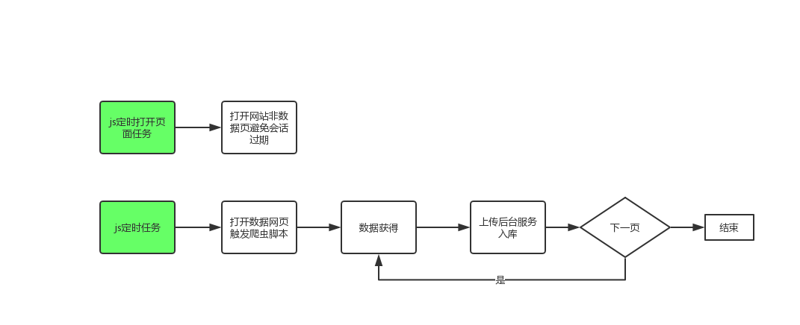

油猴爬虫方案
Contents
背景
目前很多知名的网站都增加一些反爬虫手段，使得编写爬虫时并不那么理想，有些网站很难破解其反爬技术。如利用puppeteer技术操作页面时，往往出现一些加载异常，容易被网站检测程序探测到而拒绝响应。
方案
浏览器扩展程序油猴(tampermonkey)似乎可以做很多事件，对分析网页与事件处理有大的能力空间。由于油猴是在用户手动打开的浏览器下运行的，完全是与真人操作类似，可能不那么容易被检测到。
思路是这样的：
第一步：人工启动浏览器，导航到要抓取数据的页面；（这一步是唯一人工干扰的）
第二步：油猴自动启动，分析页面，处理页面数据；
第三步：将获得的数据通过GM_xmlhttpRequest接口推送到后台数据接收服务，将数据入库；
第三步：获得“下一页”标签元素，触发下一页请求；返回第二步重复运行；
第四步：没有“下一页”时，程序退出。
缺点及优化
上述方案的缺点很明显，那就是第一步必须是人工启动浏览，导航到具体页面，没有计划任务。
当然这不是大问题，还是利用油猴，编写一个计划任务的脚本来解决上述问题，即利用js定时器，触发指定的页面。更进一步，我们有好多爬虫脚本，这时我们就做一个任务队列，让js定时器通过导航到指定页面来启动对应的js脚本。js定时器的@match值为http://*/*。
具体做法是：
一、编辑js定时器(计划任务)，实现定时打开指定网站；
二、让浏览器始终打开；
三、部分需要登录的网站，先行登录；并让定时器第间隔一段时间（如半小时）刷新一下网站的一个非数据页面。
四、爬虫脚本执行完后，尽量关闭页签，以节省电脑资源。
示意图

Author Joyeah
LastMod 2019-11-29